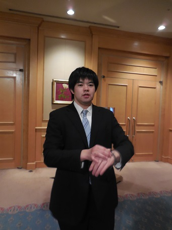

|
2016年1月に行われた51期の先輩方の追い出しコンパ（追いコン）の詳細を報告します！ 一次会は東陽町のホテルイースト２１にて、二次会は高田馬場のバー「キャンティーナ」、 そして三次会はまんぷく亭にて盛大に行われました。 年も明けたばかりでしたが、参加していただいた皆様本当にありがとうございました！ 53期にとっては幹部としての初めての大仕事でしたが無事に終えることが出来ました。 今後の行事も53期一同頑張ってまいります。 ※51期幹部紹介はこちらをどうぞ！ 一次会場に到着！ 立派な会場でした！追いコン担当の方々ありがとう！  式の冒頭の挨拶が不安で落ち着かない現主将。どうどう。 追われる側の先輩が遅刻なんて…。とりあえず歓談しながら待機。 そしてスタート！まずは主将挨拶。彼にとって今日はとてもお日柄が良かったそうです。 （絶対マジメに聞いてない……） 続いて前主将挨拶。 中村先輩、話長すぎてビール炭酸抜けちゃいましたよ…。てことで乾杯！！ こちらの不真面目野郎は杉浦（一年）といいます。お兄さんトレンディだね！ 司会は53期主務の山崎。祝電披露を緊張の面持ちで代読中。 四年生の先輩のごはんを取りに来た一年生たち。こっち向いてよ。 歓談タイムです。東邦コンビをパシャリ。 失礼を承知で言いますが、なにやってんだこいつら。 先輩方からのスピーチ。簡単に話をまとめると上から「おまわり」「スノボ」「有給休暇」「イケメソ」「ビニール袋」 惚れた。 ドSの競演。 ユラユラして広報を馬鹿にする深瀬（一年）。 三脚になる児玉（二年）。 爆食い篠崎（二年）。 社会不適合者による抱腹絶倒ゴミクズスピーチ。 もう一人のカメラマンは広報のことが嫌いなようです。死にたい。 なんで木原はカメラ目線なのか。 先輩方のスピーチの続きです。最後は田伏先輩にきちっと締めくくっていただきました。 いよいよ終盤。大橋主将からの送辞です。なんとなくかっこよく撮れたので下の写真はおまけ。 しわしわしわぁ。 
一年生による花束の贈呈。司会の仕切りが悪くてグダった気が…しないということで。 人生劇場、紺碧の空、校歌を斉唱。 最後に記念写真を撮影し、一次会は終了！二次会まで自由行動でーす！ 2次会はこんな感じです。清田と杉浦（一年）のあざといピース。 右から二番目、完璧に酔っ払い。 恒例のビンゴ大会では青木（一年）が一番乗り。田伏先輩から超高級ボールペンをもらっていました。うらやま。 なんだか新井先輩嬉しそう。いや、児玉（二年）も嬉しそう。クソ。 途中には元主務でいらっしゃった平先輩手作りのハイセンスショートフィルムも鑑賞し大いに盛り上がりました。 このあとの3次会も盛大に執り行われ、無事に全行程が終了しました！今日のこの日の思い出が５１期の先輩方の心に 少しでも残ってくれれば運営の私たちとしては本望です。皆さんお疲れさまでした！ (※写真へのコメントは全て管理人がしております。) |